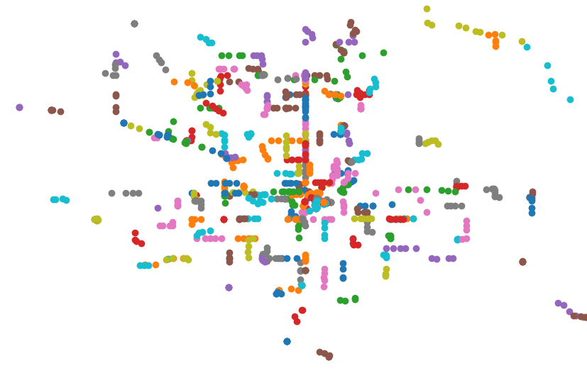

The goal of this project is to use RTD's live position feeds of buses to identify which lines are experiencing bus bunching the most. The ultimate purpose of this project is to better inform RTD of where resources and analysis should be more heavily allocated to avoid the issue of bus bunching. This website will be updated with the full results and analysis when they are completed.
From initial scripts, the Google Transit API is able to extract the bus locations to +/- 30 second measurements, which means that an initial polling rate of 1 minute is optimal. Above are shown the scattered locations of various RTD buses on 6/5/2020 for a five minute interval. The outlines of major traffic arteries (US36, I25), as well as other major highways (E470, I70) are visibe. Longer measurements will yield better results, and this webpage will be updated when they are available.